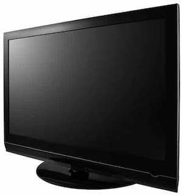

Actele la control
Cu ceva timp în urmă – pe la începutul secolului al XIX-lea, intelectualitatea românească, la unison cu cea europeană, căuta să dezlege un lucru care până mai devreme nu era nici măcar luat în seamă, dar care dintr-o dată a devenit esențial, vital: originea, mai precis certificatul de naștere al poporului, al națiunii din care făceau parte. Întreg efortul stătea sub semnul cultural, în scopul construirii unui om doar cultural. Așa a apărut deodată – după cum spuneam – interesul pentru o nouă știință: cea a folclorului. A izbucnit căutarea, înregistrarea cu mijloacele vremii, inventarierea, …compunerea textelor care stau la baza formării poporului român. Ca de fiecare dată – de altfel, la fel ca astăzi – desigur că cea mai mare parte a intelectualilor avea model – și tot desigur că modelul era unul străin, cel franțuzesc, adică cel european. După câteva încercări nereușite de fals – tot după modelul European, după cum se va vedea – în cele din urmă s-au stabilit ca texte mărturie cele două balade pe care le cunoaștem astăzi: Miorița și Meșterul Manole. Nu vom face analiză pe aceste texte și nici nu vom considera dacă sunt sau nu nimerite pentru a arăta sau demonstra că poporul român s-a născut și are și certificat de naștere. Despre care este certificatul de naștere al poporului român vom vorbi altă dată – fiindcă noi nu împărtășim aceiași idee.
Ni se pare important pentru ceea ce urmărim în textul de față să surprindem contextul european al momentului respectiv, pentru a observa unele apropieri de momentul actual european.
Pe scurt: Franța tocmai își aflase cântecul războinic care arăta eroul ce stă la baza nașterii poporului francez: Le chanson du Rolland; asemenea lor, spaniolii se întăreau gândindu-se la marele Cid, eroul din care ei se iviseră în lume, personajul principal al lui „El cantar del mio Cid”; unul dintre imperii stabilise deja că, în „Das Nibelungenlied”, Siegfried are o importanță capitală la formarea popoarelor germanice și chiar la plămada întregii lumi. Mai din nord, Eda ne spune povestea altor popoare. Fără îndoială de un mare spectacol lingvistic, „Beowulf” reglează problema certificatului de naștere pentru regatul Marii Britanii. La fel de întârziați, dar la fel de prezenți cum îi știm, rușii au scos la iveală – te și miri cât de repede s-au mișcat – desigur, tot un mare războinic, căruia i-a fost dedicat certificatul de naștere al marelui popor rus, „Cântec pentru oastea lui Igor”.
Ceea ce pare cel puțin interesant și atrage atenția este faptul că s-a ales același moment pentru a se produce această legitimare – de parcă cineva ar fi cerut tuturor statelor „importante” actele la control! Cu puțină atenție, sau cu o verificare serioasă se poate, credem noi, vedea că actele de naștere sunt de-a dreptul false – dar aceasta este o altă poveste despre care nu ne-am propus să vorbim acum. Pentru cei care cunosc legăturile oculte create în Europa secolelor 18 și 19 nu este nimic de mirare. Procesul era unul de legitimare culturală, mitologică – oricum, dar în afara lui Dumnezeu.
Semnificativ ne apare și faptul – pentru această situație „europeană” – că este pentru prima oară când întreaga cultură europeană a fost folosită, la unison, în scop manipulator și spre folosul politicii, prin ceea ce învățăm noi astăzi sub numele de „sincronizarea culturală, europeană” – cu alte cuvinte uniformizarea și comunizarea europeană. Aceasta nu a fost decât o etapă premergătoare pentru punerea în practică a visului iudeofrancmasonic european – Statele unite ale Europei, Federația europeană sau Uniunea europeană (denumire acceptată, în ultimă instanță).
Manipularea întregii Europe, prin mijloace de propagandă culturală, în scopul politic și administrativ de reîmpărțire teritorială este primul pas. Este un pas care a fost urmat de mulți alții. Cu această acțiune a fost demonstrat că este esențială crearea omului cultural – sau măcar alfabetizarea în masă.
Astfel că, în pofida eforturilor pe care le face astăzi aparatul de propagandă oficială, pentru orice cercetător al problemei, lucrurile sunt clare: Europa era supusă unui plan politic unic, instrumentat pentru prima oară cultural. Programul revoluției franceze – adică al iudeo-francmasoneriei „europene” – este punctul de pornire și în același timp călăuza de care nu ne-am mai despărțit până în ziua de astăzi.
Și dacă prin fenomenul, numit de noi toți – în mod convențional – Renaștere, s-a încercat recrearea lumii, renașterea unei lumi dar de această dată fără Dumnezeu, fără Hristos, prin întoarcerea la „lumea antică” (adică la vechile forme artistice și doctrine filosofice și teosofice în primul rând), iată că a sosit și ora organizării serioase din punct de vedere politic al aceluiași spațiu: Europa. Prin cultură s-a făcut și se face propagandă pentru noua formă de organizare universală: republica. Republica culturală, republica care, după ce se creează republici mici și prin unirea lor va deveni republica unică. Deși pare fantezist și de necrezut, sau …
Dar cultura nu poate penetra masele analfabete – este momentul în care se pornește o eroică luptă pentru „emanciparea” maselor. Cu alte cuvinte, oricine trebuie să poată primi mesajul transmis de propaganda manipulatoare, prin cultură. Este foarte interesant și în același timp spectaculos să facem o analiză a drumului invers, pe care îl parcurge societatea contemporană europeană, ca urmare a schimbării instrumentului cultural de manipulare, cu instrumentul mediatic, bazat pe sunet și – fundamental – pe imagine, pe imaginea în mișcare. Cu alte cuvinte radioul și, în perioada contemporană, televiziunea, înlocuiesc instrumentul cultural mai vechi de propagandă. Este o luptă pe care imaginea în mișcare a câștigat-o. Cel puțin temporar. Cuvântul scris s-a lăsat luat ostatic – mai apare pe banda de jos la știri și la subtitrajele filmelor, în România; fiindcă, în cele mai multe dintre țările îngrozitor de dezvoltate, scrisul nu mai apare nici măcar în locurile de care spuneam, fiind înlocuit de vocea care traduce.
O poveste mai veche: Don Quijote de la Mancha
Imaginea pe care o are acest personaj este unanim acceptată: Don Quijote de la Mancha e nebun! Patologic. Mai departe – și ceea ce contează din punct de vedere literar – el este un caracter prin care Miguel Cervantes ne transmite – printr-un șir de situații în care este pus personajul – un mesaj. Care este acel mesaj s-a tot discutat și nu vom insista în aceste rânduri asupra acestei chestiuni. Ceea ce ne interesează, aici și acum, este chiar punctul comun al tuturor interpretărilor: nebunia frizerului de a se crede cavaler. Nebunia care transformă întreaga lume din jurul său, nebunia de care se contaminează în final și Sancho Panza – așa suntem lăsați să credem – și față de care protestează toată lumea, mai puțin Rocinanta. De unde vine această nebunie și care sunt efectele ei? Trecem nepăsători peste afirmațiile după care întreg romanul nu este decât o comedie și ne întrebăm ce anume a făcut din această scriere o poveste care și-a păstrat întreagă puterea, o poveste exemplară? Sigur că nu trebuie să credem că toți cei ce îl folosesc pe Don Quijote au și citit povestea – nici poveste! În schimb putem afirma răspicat: bărbierul a citit!
A citit foarte mult, atât de mult încât în ochii celorlalți era clar că se va țăcăni. A citit un singur fel de literatură: literatură cu cavaleri, cu domnițe, cu fapte de mare vitejie, povești în care existau și onoarea și demnitatea pe care lumea lui le rătăcise. A cunoscut o altă lume – imaginea unei alte lumi. A citit atât de mult încât, în cele din urmă, a evadat în lumea pe care a considerat-o el ca fiind reală sau necesar reală, pentru a putea viețui. Întreaga lume a lui Don Quijote este pentru el o lume nu doar reală ci singura lume posibilă, în care se poate trăi – bine sau rău, în pericol sau glorie, învins sau învingător: aceste lucruri nici nu mai contează. Pe de altă parte, în acest personaj se întâlnesc cele două tendințe. Care își dispută supremația chiar în persoana lui Don Quijote: lumea scrisului și lumea reală. Care este părelnică și care adevărată? Pentru lume una, pentru Don Quijote cealaltă. În Don Quijote, scrisul câștigă în lupta cu realitatea. Acesta este motivul principal pentru care avem de-a face cu o poveste exemplară: Don Quijote este un manifest al unei lumi a cărei „realitate” se impunea o dată cu el – lumea din literă, lumea din scris. O lume în care pare totul real, o lume în care luptele chiar au loc, o lume care cu timpul a câștigat atât de mult teren, încât a supus realitatea.
Realitatea înceta astfel să mai fie „reală” sau altfel spus, povestea scrisă era mai reală decât realitatea însăși. Aceasta este prima victorie majoră, la nivel planetar, a propagandei culturale: descoperirea puterii pe care o poate căpăta scrisul ca descriere a unei realități oarecare; mai apoi, multiplicarea acestei licori literale, care te ajută să vezi altceva decât realitatea, drept realitate.
Totul devenea contagios, într-o formă extremă – pentru acea perioadă. Există o temă, pe care noi, cei care conducem vrem să o inducem manipulator, în scopul de a aplica o politică asupra unei părți a planului, schimbând chiar felul de a gândi al maselor? Atunci îl chemăm pe scriitor, îi dăm tema. Și, odată apărut romanul Anna Karenina, problema femeii se va discuta cu totul altfel – prin particularizarea reușită cu metode cultural literare. Acest mecanism încă mai funcționează, deși a fost cu totul depășit. Acesta este un exemplu ilustrativ și suficient ca pornire, pentru a argumenta afirmația potrivit căreia „orice cultură este o manipulare imensă”.
O interpretare mai nouă
Dar aceasta, lumea lui Don Quijote, poate fi numită lumea premodernă. Iar Don Quijote, între timp, a pierdut partida – e și firesc, nu mai suntem la 1600. Astăzi, manipularea nu se mai face – decât în foarte mică măsură – prin literatură care cunoaște planul doi sau chiar fundalul și care mai folosește doar ca sursă de inspirație sau ca material brut pentru transpunerea în imagini mișcate. După victoria asupra realității și după o perioadă de patru secole, Don Quijote și-a pierdut locul.
S-a deschis un nou război cu realitatea. De această dată cu alte mijloace pe care nici nu le visa bărbierul. Asupra literei, asupra scrisului s-a năpustit imaginea. Imaginea mișcătoare, care creează o aparență imensă a realității, incomparabilă cu cea sugerată de literă. Literatura hrănea imaginația particulară: chipul lui Don Quijote ar fi fost desenat în atâtea feluri câți cititori a avut povestea. Acum imaginația – adică jocul mental al imaginilor – a fost supusă la rândul ei, prin crearea unui singur chip al frizerului, o singură voce – după cum se poate vedea în filmul cu același nume.
Substituirea este una „revoluționară”, iar pentru istoria omenirii este de o importanță colosală, prin consecințele pe care le produce, consecințe care – fără nici cea mai mică îndoială, și fără legătură cu sensurile inițiale – nu sunt cunoscute sau stăpânite de cineva.
Aparența realității bate, astăzi, realitatea însăși – de departe! Omul de pe stradă, fără a mai fi în pericolul de a fi considerat anormal, nebun sau țăcănit – ca odinioară bărbierul – pășește pe bulevard ca Michael Jackson, ca Rambo sau ca Bruce Lee, iar la fiecare pas te poți întâlni – o dată sau de mai multe ori, depinde cum îți e norocul – cu Madona, Paris Hilton, cu Sharon Stone sau chiar cu Sexi Brăileanca. Aberația dezarmează: în loc să ne gândim că acum, poate lângă noi, trăiesc oameni sfințiți; în loc să-i căutăm pentru marele nostru folos; noi imităm imaginile, maimuțărim realitatea – gesturi care nu îl caracterizează pe om, ci este definitoriu pentru regnul animal.
Mai departe, acest om de pe stradă – pe care l-am numit în altă parte postomul sau ultimul om – nu mai este nici măcar un om culturalizat (calitate pe care trebuia să o dețină în trecutul „literar” și „literal”, pentru a putea fi mai lesne manipulat). El nu mai e un cititor, un om cultural – fiindcă nici nu mai e nevoie.
Acest postom a rămas fără imaginație – imaginația sa lucrează cu imagini-clișeu prezentate în clar, cu imagini mișcate, spre uniformizarea minților. Aceasta este spălarea creierelor – și nu alta!
Existența sa se bazează pe o imensă mașină de creat viață aparentă, de produs și declanșat reflexe emoționale care covârșesc, acoperă și anihilează chiar calitatea de a raționa. Astfel, într-adevăr postomul este ceea ce a mai rămas după sfârșitul omului. Realitatea este cea care este văzută pe ecran – și niciodată cea … „reală”. Real este lucrul care pare cel mai tare real, lucrul care seamănă cel mai mult cu realitatea – și niciodată realitatea … reală. Realitatea devine ficțiune iar ficțiunea devine realitate.
La o analiză onestă și pertinentă ultimul om sau postomul care suntem noi, nu poate să-l considere pe Don Quijote în nici un fel nebun, nu are căderea morală, fiindcă el însuși este un fel îmbunătățit de Don Quijote – un fel de bărbier, dar analfabet, care nici nu mai are nevoie de această obișnuință învechită de a citi. Trăitorul în ficțiune este astăzi măsura normalității spre care tinde întreaga omenire. Fiți onești și recunoașteți.

O chestiune de propagare
Tehnica propagandei este strâns legată de tehnica utilizării imaginilor în mișcare. Scopul imediat al propagandei este înlocuirea lumii reale cu oricare altă lume – așa se explică aderența pe care o au toate teoriile și doctrinele referitoare la alte realități, la alte lumi, la marțieni, la viața pe alte planete etc. Manipularea lumii contemporane tinde să devină sursa existenței – lucru fără precedent în istorie.
Astăzi, pentru a fi manipulat îți trebuie – și neapărat ai! – televizor, radio, și să citești presa (o din ce în ce mai mică categorie). Cu alte cuvinte pentru a fi manipulat trebuie „să te informezi”, „să fii informat”. În adevăr, cu cât ești „mai bine informat”, cu atât ești mai manipulat.
Toate aceste lucruri sunt foarte greu de crezut. Sunt cu atât mai greu de crezut, cu cât statutul pe care îl crezi al tău – de „foarte bine informat” – este chiar sprijinul tău. Aparența, „ceea ce pare”, „părerea” – toate ale tale – te fac să nu crezi o iotă din rândurile de mai sus. Dificultatea mai vine și din faptul că o puzderie de sloganuri îți dau impresia, părerea că ai dreptate. De exemplu, faptul că toată lumea acceptă aproape religios, că „trăim într-o epocă a informației”. Dar dacă ne apropiem puțin de această problemă vom observa că există un adevărat bombardament informațional – în fiecare clipă se editează mii de informații, așa încât dacă vrem să fim „informați” măcar – necum „bine informați” – ar trebui să citim mii de pagini în fiecare dimineață! Lucru absolut ridicol și pueril. De aici decurge că e imposibil să fii „bine informat” sau „informat”.
Perioada în care trăim – sau ne facem că trăim – poate fi denumită, dacă vrem să o definim în raport cu informația, epoca zgomotului informațional. Caracterizarea corectă a perioadei pe care o străbatem – din perspectiva manipulatorie – este aceea de perioadă de impresionare, de epocă emoțională; fiindcă partea din noi asupra căreia are loc asaltul manipulator pseudo informațional este – fără îndoială – zona emoționalului. Dacă suntem atenți la știri – sau la oricare altă emisiune – vom constata că așa stau lucrurile. Spre exemplu nu contează dacă personal ai câte informații poți avea despre mersul – crezi tu – real al unui conflict. Fiindcă, oricât de bine informat ai fi, cu o simplă înșiruire de imagini-clișeu – de tipul, femeie cu copil în brațe, o bătrână plângând, doi morți (care de cele mai multe ori nu au nici cea mai mică legătură cu respectivul conflict, ci sunt luate de aiurea sau jucate pe platourile cinematografice) – ai renunțat imediat la poziția ta de om „informat”, trecând în tabăra adversă, de om „emoționat”, „impresionat”. Asupra acestor din urmă lucruri ar trebui făcută o analiză serioasă.
Așadar, noi trăim o perioadă de manipulare emoțională, realizată cu imagini în mișcare.
Trecerea de la povestea lui Don Quijote, la imaginea lui Rambo care calcă luna – discutabil și foarte îndoielnic – are o însemnătate covârșitoare. Dacă lectura o face mintea cu ajutorul ochilor – manipularea actuală se face doar cu și prin ochi. Mintea postomului nu mai are nici o treabă – e șomeră. Imaginile creează concepte iar nu conceptele imagini. Nimic nu mai este descris, totul este prezentat. Tu ești pus în postura de „în prezență”. Prezență care – desigur – e doar aparență, fiindcă imaginea realului nu are a face cu realul decât prin analogie cu imaginea de pe ecran. Mai precis, pe ecran noi vedem imaginea unui crocodil și nu un crocodil. Nivelul de reprezentare atinge, prin analogie, stadiul cel mai apropiat: de egalitate. Ajungem în același loc: realitatea este înlocuită cu imaginea realității. Locul lui „a fi” îl uzurpă – fără nici o mustrare de cuget – „a părea”.
Sfârșit de partidă
Așadar, pentru a reveni la drumul cultural, parcurs de omul renascentist și revoluționar, este fundamental de observat care este linia neîntreruptă în ceea ce am numit mai sus propagandă politică, făcută în prima fază, cea a renașterii, prin artă și filozofie – mai precis prin teosofie și ocultism cabalic -, mai apoi prin cultură – în perioada următoare a programaticei și mult pomenitei revoluții inițiale – pentru ca, în cele din urmă, în perioada contemporană, post modernă și postumanistă cele două trăsături să devină cronice, să intre în definirea ființei umane.
Scurta trecere în revistă a ideilor de mai sus ne poate fi folositoare pentru a înțelege ce înseamnă globalizarea. Ceea ce știm sigur este că există un plan – care se pune chiar acum în aplicare, nu mai este nici un secret – de construire a unei republici universale (globale), cu o singură formă de organizare politică, economică și culturală.
Ceea ce mai știm este că întreg efortul iudeofrancmasoneriei iluminate de a realiza acest plan – tot de ea făcut – nu-L include în nici un fel pe Hristos. Este o republică universală atee. Ca urmare, putem acum înțelege că aproape tot ce am consumat ca artă sau cultură, în ultimele două sute de ani, în cea mai mare parte a fost făcut pentru a fi consumat de noi, ca instrument de propagandă, în scopul construirii republicii universale atee (comunismul este evident în totală concordanță cu acest proiect).
Să ne amintim că Renașterea este o mișcare îndreptată împotriva lui Dumnezeu Omul, Iisus Hristos, Mântuitorul, prin înlocuirea Lui cu… omul. Renașterea este esențial o mișcare antropocentrică. Că se face această schimbare a lui Dumnezeu cu omul, într-o modalitate artistică deosebită, sau că sistemul filosofic al unui filosof este spectaculos – aceasta este o altă problemă. Calitățile artistice și raționale remarcabile ale celor care luptă împotriva lui Hristos sunt tocmai pentru ca înșelarea noastră să fie mai lesne de făcut. Cu alte cuvinte, se luptă împotriva lui Hristos cu arme care strălucesc, chiar frumoase. (Să apreciezi frumusețea cuțitului și a tăieturii mortale care ți-a ucis mama, e un semn de oligofrenie, fără nici o îndoială). Mai putem să ne amintim că cel mai important slogan, mobilizator al revoluției a fost „cu mațele ultimului popă, să spânzurăm ultimul rege!” Iată care este ținta pământească a corifeilor libertății, fraternității și egalității. Revoluția franceză este matricea răzvrătirii împotriva lui Dumnezeu și inaugurează o epocă – în curs – pe care o putem numi epoca revoluționară antihristică. Fiindcă, nici una dintre revoluțiile – care au însemnat spasme pentru omenire și care continuă – nu s-a făcut în alt scop. Lupta de clasă, burghezie, capitalism, socialism, comunism, liberalism, democrație – toate acestea și multe altele – sunt cuvinte care denumesc concepte ce se definesc prin revolta împotriva lui Hristos.
În mod esențial, orice revoluție este luciferică, fiindcă primul și marele revoluționar este chiar Lucifer.
Nu acesta este drumul firesc al omului, spre împlinirea lui, iar această stare de răzvrătire, această lipsă de identitate și de înțelegere a lumii nu-l definesc pe „omul lui Dumnezeu”. Tocmai pentru a redefini absolut și definitiv omul, pentru a-i arăta cine este el și care este realitatea, tocmai pentru aceste lucruri Dumnezeu a coborât pe pământ și S-a făcut om. Nu pentru a propovădui revoluția sau republica universală atee. Ci pentru ca noi să înțelegem că nu am fost făcuți „carcase raționale”. Căci noi suntem chip și asemănare – și nu Dumnezeu este făcut după chipul și asemănarea noastră, cum ne este indus -, pentru că noi înșine, fiecare dintre noi înseamnă o persoană care în interiorul unui popor, într-un cadru numit neam ne putem urma drumul și deveni nemuritori prin mântuire.
Comentarii